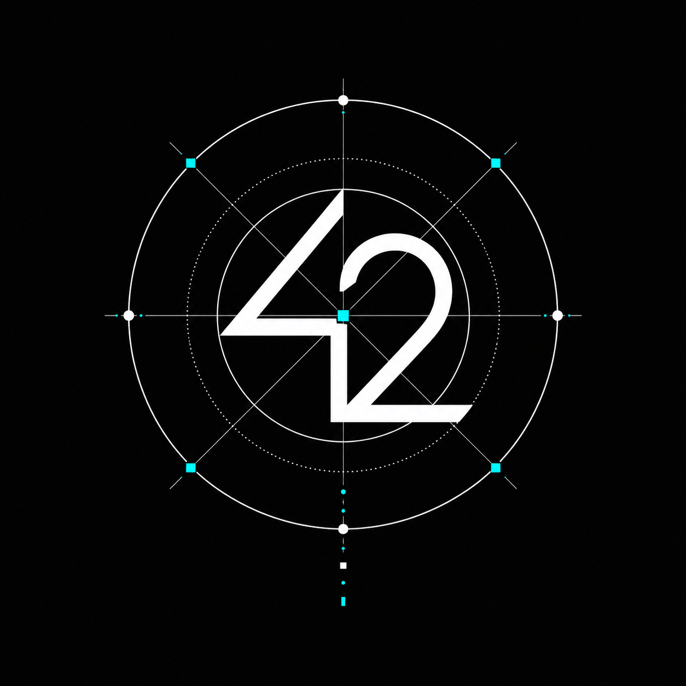

Internet field notes / Issue 0001
Notes from the noisy side of the internet.
Crypto, memes, technology and occasional personal conviction.

VN.10.8231
LISTENING...
Sometimes alpha.
Sometimes nonsense.
Always curious.
From Vietnam 🇻🇳
Currently observing:
BTCAI AGENTSBASEMEME CULTUREFUNDINGINTERNET DRAMA
BTCAI AGENTSBASEMEME CULTUREFUNDINGINTERNET DRAMA
Signal Board
An unscientific overview of whatever currently has my attention.
Personal notes. Unserious methodology. No financial data.
Subject
Status
Signal
BTCWatchingStructurally interesting
MemesOverheatedStill inevitable
AI AgentsObservingToo many dashboards
AirdropsTiredFarmers need sleep
FundingSelectiveDecks are getting longer
InternetNormalStill weird
My convictionVariableRefresh to recalculate
Latest Notes
Longer thoughts, lightly edited after the tabs have been closed.
Current Rabbit Holes
Six tabs I keep reopening.
- Research quality
- Questionable
- Entertainment value
- Acceptable
- Financial advice
- Absolutely not
| Specimen | Status | Conclusion |
|---|
| Frog | Eternal | Cannot be eliminated |
|---|
| Dog | Cyclical | Returns every market |
|---|
| Cat | Under-researched | Further study required |
|---|
| AI Mascot | Overcrowded | Too many generated eyes |
|---|
| ASCII Coin | Emerging | Developers are bored again |
|---|
FILE_004299- Type
- Article
- Status
- Worth reading
- Subject
- Internet-native communities
FILE_004312- Type
- Tool
- Status
- Open often
- Subject
- On-chain investigation
FILE_004328- Type
- Repository
- Status
- Forked
- Subject
- Small autonomous agents
FILE_004341- Type
- Saved meme
- Status
- Culturally important
- Subject
- Market cycle psychology
FILE_004355- Type
- Article
- Status
- Needs rereading
- Subject
- Attention markets
FILE_004367- Type
- Project
- Status
- Half finished
- Subject
- Vietnam crypto map
FILE_004381- Type
- Interesting account
- Status
- Notifications off
- Subject
- Protocol design
FILE_004399- Type
- Saved meme
- Status
- Evergreen
- Subject
- Founder vocabulary
No files match this filter. The archive may have been rugged.
About 429999
429999 Journal is a personal notebook about crypto, memes, technology and the strange behavior of people on the internet.
It is not a news outlet.
It is not a signal group.
It is not financial advice.
It is mostly an attempt to turn noise into notes.